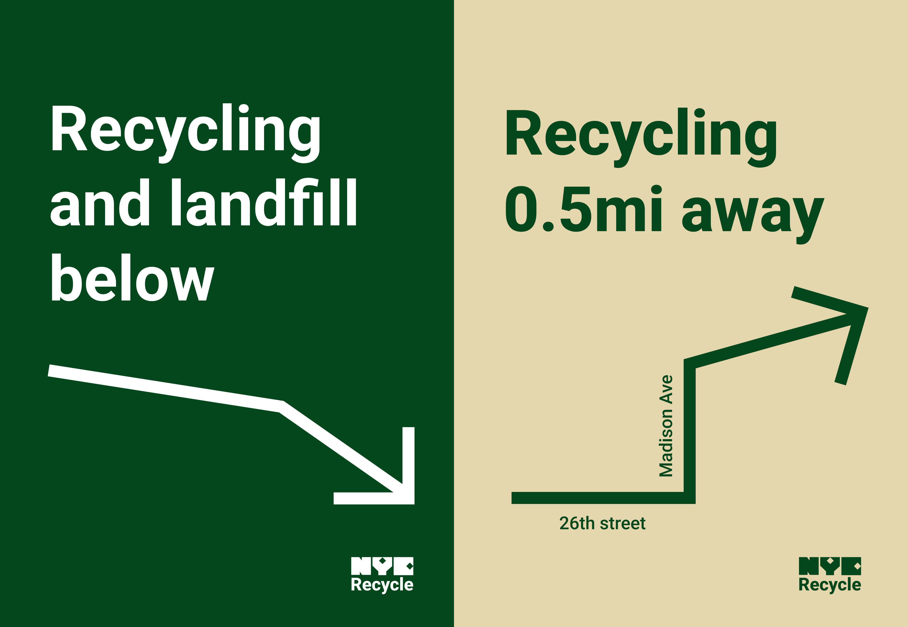
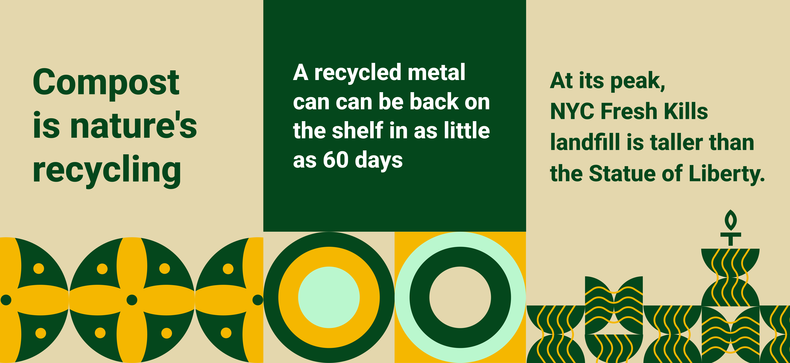
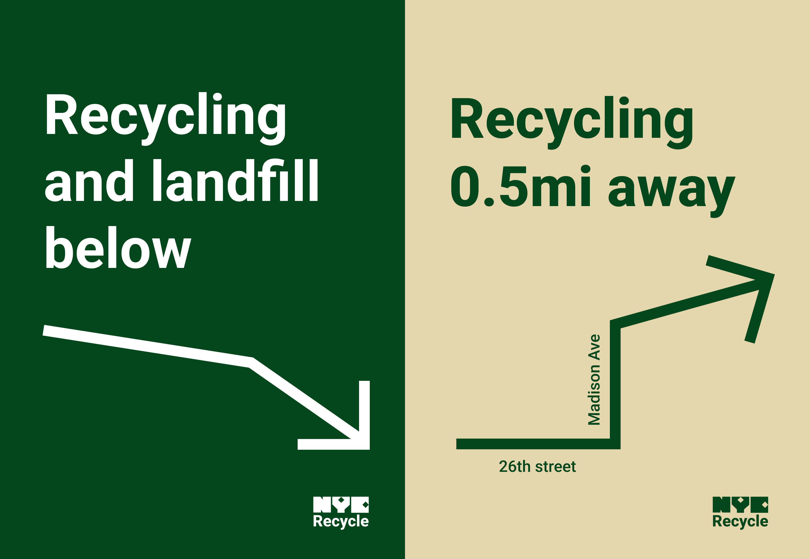
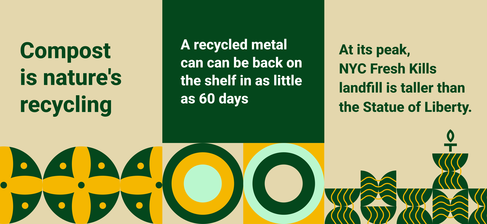

02
NYC.gov Recycle Revamp
*Still in progress*
*Still in progress*
Branding
Design System
Iconography
Environmental
To capture the essence of New York City's vibrant and bustling atmosphere, the revamped designs will embrace bold and dynamic visuals, updated typeface, and an engaging color palette. These elements will infuse the recycling program with the city's vivacious spirit, ensuring that it seamlessly blends with the urban landscape while encourage more people to categorize their trash.


 


